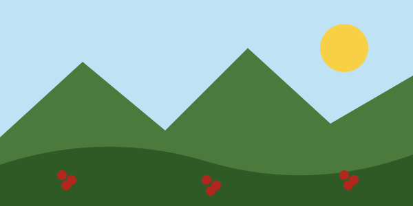

Café Tostión Media
Notas de chocolate y panela. Ideal para preparar en greca o cafetera de goteo.
Precio: $28.000 la libra.
Café de origen cultivado en las montañas de Colombia y tostado en casa.
Somos una empresa familiar de Huila. Compramos el grano a pequeños caficultores de la región y lo tostamos en lotes pequeños cada semana.

Notas de chocolate y panela. Ideal para preparar en greca o cafetera de goteo.
Precio: $28.000 la libra.
Notas frutales y acidez brillante. Recomendado para métodos de filtrado como V60 o Chemex.
Precio: $32.000 la libra.
Publicado el .
Nuestra segunda tienda queda en el centro de la ciudad y abre de lunes a sábado.
Fecha:
Aprende a preparar café en casa con métodos manuales. Cupos limitados.